嘉興大藏經 第19冊
No.B047 瑜伽集要燄口施食儀 (1卷)
【唐 不空譯 西夏 不動金剛重集 清 受登詮次 有圖像四十 緣起】
第 1 卷
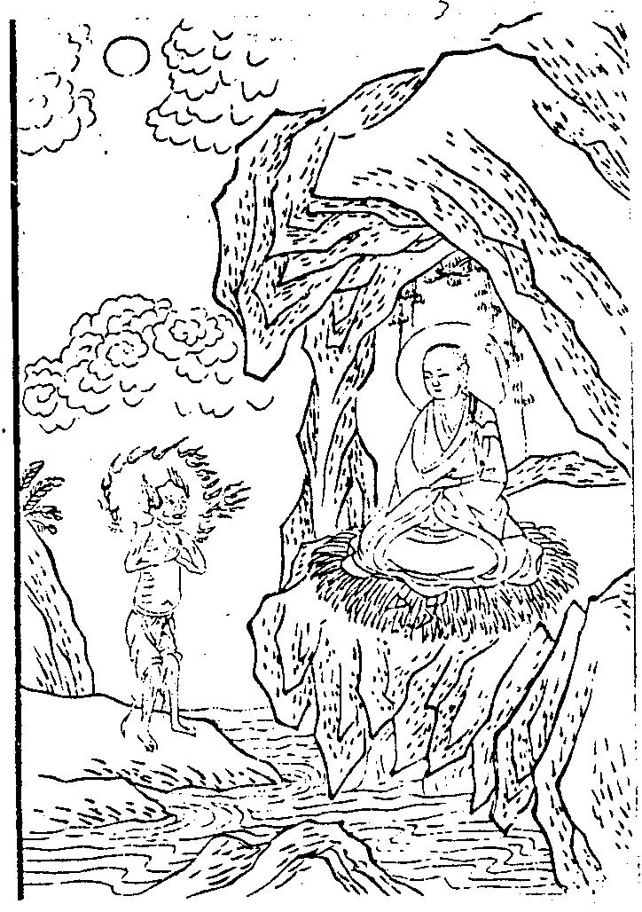
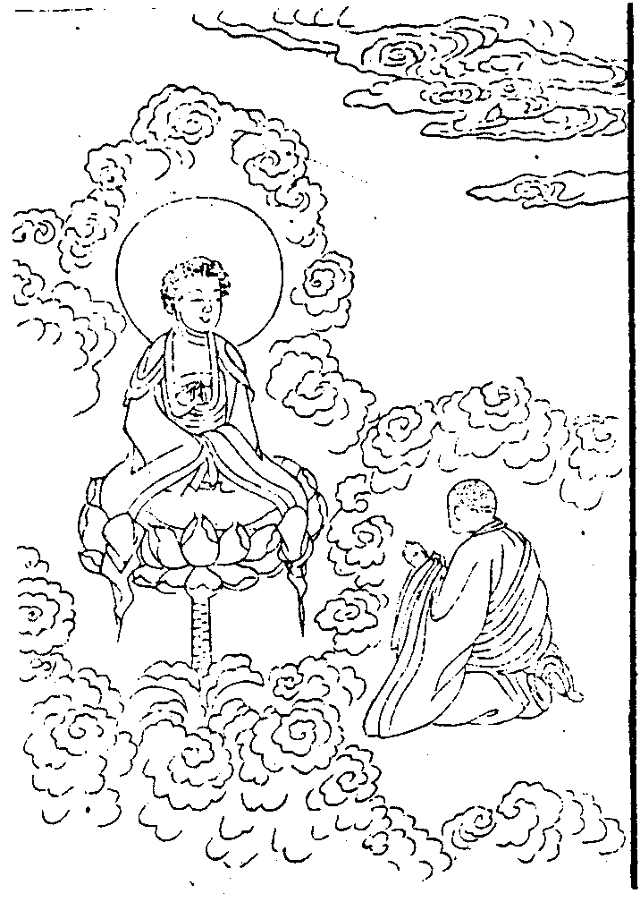
燄口施食緣起
(於瑜伽集要救阿難陀羅尼燄口儀軌經錄出)。
世尊在迦毘羅城尼拘律那僧伽藍所與諸比丘菩薩眾會而為說法。爾時阿難獨居靜處念所受法夜三更候見一餓鬼形甚醜陋。口中火然咽喉如針頭髮髼亂毛爪長利。住阿難前。白曰。汝後三日壽命將盡必當生於我類之中。阿難聞已問之曰。若我死後生餓鬼者行何方便得免斯苦鬼曰。若能布施百千那由他恒河沙數餓鬼百千婆羅門仙等。一一皆以摩竭陀國所用之斛。各與七七斛飲食。更能為我供養三寶者即得脫離餓鬼之苦。生於天上壽算無窮阿難即起往至佛所。頂禮白言。我於靜夜三更之際見燄口鬼。來語我言。汝過三日必當命盡生於我類之中。我卻問言。若我命盡生餓鬼者。云何令我得免斯苦。彼荅我言。若能施我百千那由他恒河沙餓鬼百千婆羅門仙等種種飲食者不墮斯類。而能生於天上。世尊。我今云何於一時間得能備辦若干餓鬼仙人等種種飲食。佛告阿難。我有方便可能令汝於一時中施與若干餓鬼若干婆羅門仙種種飲食。阿難。我於過去無量劫時。曾作婆羅門。乃於觀世音菩薩所受一陀羅尼。名曰無量威德自在光明。汝今若能依此陀羅尼法加持飲食則此飲食一一變成無量耳露法食。如是便能充足飽滿百千那由他恒河沙餓鬼。及婆羅門仙異類鬼神之眾。阿難。當知此之飲食量同法界。餓鬼仙人受用無盡。若能依法修之福壽增長解脫苦身。皆獲聖果。
佛告阿難。若欲修此施食之法須學瑜伽三昧。依瑜伽阿闍黎發無上菩提心受三昧耶戒入大曼荼羅得五智灌頂紹阿闍黎位者。方可受行此法傳持斯教。若不爾者得盜法罪。
欲作法者先應選擇閒靜園林精潔堂室。用香水泥塗抹壇場。方圓大小隨施主力。周圍飭以幢幡寶蓋位面陳以華香燈塗。所有供事。俱須如法。莊嚴一畢入中行法。是即名為三昧耶壇也。
瑜伽集要燄口施食儀
(行者先按視道場。幡幢道具次第莊嚴。華香供養。敷陳周整。已。齋主引請行香升座)。
開啟中(○警聞法界○然香達信○結界灌頂)
(表白列職。舉動法音)。
南無盡虛空遍法界過現未來佛法僧。
常住三寶。
(法界三寶。一真自住。運此聲稱。以警覺之。不移真際。而起應現)。
○然香達信
(香文信意。隨主者說)。
香雲蓋菩薩摩訶薩。
○結界灌頂
南無大悲觀世音菩薩。
(祝水文任主者說。大眾同誦大悲咒。加持淨水。行者即以咒水散灑上下四方。隨眼見心想可標記處為堅固清淨道場大界。尋授水器與表白於道場內外。周繞三灑以為結界)。
(行者是時即用咒水加持身首。及五佛冠默誦五佛毘曬迦真言。手自戴之。灌頂真言曰)。
(唵薩[口*縳]怛他櫱帶濕縳（二合）囉耶（二合）毘曬迦鍐（頂中）。唵[口*縳]日囉（二合）薩怛[口*縳]（二合）毘詵遮[牟*含]吽（頂左）。唵[口*縳]日囉（二合）囉怛曩（二合）毘詵遮[牟*含]怛洛（二合）（頂前）。唵[口*縳]日囉（二合）缽娜麼（二合）毘詵遮[牟*含]紇哩（二合）（頂右）。唵[口*縳]日囉（二合）羯麼毘詵遮[牟*含]噁（頂後）)
甘露王菩薩摩訶薩。
○施食三昧(○方便加持○正行三昧)
方便中(○觀淨法界○加持金剛○供散花米)
(○觀淨法界。先作金剛正坐。以右腳壓左腳髀上結大三昧印。二手仰掌展舒以右牒左。二大指相著。安臍輪下。次觀raṃ [嚂-皿+見]字。色體皓白遍流光明。普照一切有情界。能破有情虛妄煩惱。而我身心及有情界同一法界無二無別。隨誦真言)。
唵。[嚂-皿+見]莎訶
○加持金剛(行者安住。觀一切根身器界如幻如化本性自空。自性清淨開發菩提心。得見自心淨月輪。相。即於自心淨月輪中思惟金剛相善住一切如來普賢心真實金剛也。唵字為身金剛。啞字為語金剛。吽字為心金剛。自身證得如金剛薩埵。即誦真言)。
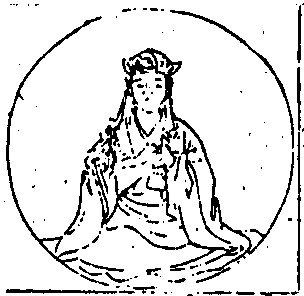
唵(引)。底瑟咤(二合)斡資囉(二合)
唵(引)。啞(引)。吽(引)
(金剛薩埵右手持五鈷金剛杵。轉拳向外。左手持金剛鈴。置於腰上。今我加持。即亦成就。隨持杵振鈴。誦二真言)。
唵。斡資囉(二合)薩荅啞吽
唵。斡資囉(二合)看吒啞吽
○供散花米
唵。斡資囉(二合)[口*普][口*彌]啞吽
(誦真言時手拈花米。即將花米散擲空中。想此所結梵界道場光網莊嚴如因陀羅)。
○正行三昧(○自成曼荼門○成他曼荅門)
自成中(○願歸三寶○成曼荼行○結願回向)
我(某甲)及法界一切有情從今為始乃至未證菩提之間誓願歸依金剛上師三寶。
捺謨孤嚕(二合)毘耶(二合)。捺謨勃塔耶。捺謨達而麻(二合)耶捺謨桑渴耶。唵哩哩哈哈吽吽癹怛。唵失哩麻哈歌羅哈哈吽吽癹怛莎訶
○成曼荼行(○開無生門○建立曼荼○慶成法門)
(持杵振鈴誦十二因緣咒。因緣無主。我心自空。是佛說因緣義。今觀諸法因緣皆無自性是即曼荅妙行之門)。
唵。耶荅兒麻(二合)兮都。不囉(二合)巴斡兮敦。的山。荅塔葛荅。歇斡怛的山拶。約尼嚕怛。耶[嘟-者+(看-目)]叭諦麻訶釋囉(二合)麻納耶。莎訶
○建立曼荼(○遣發諸魔○正立曼荼)
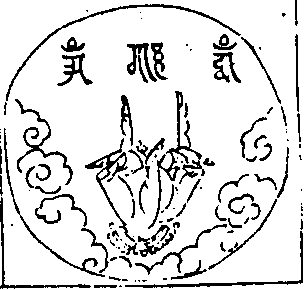
(○初遣發身中毘那夜迦難以觀羽腕置止腕上。檀慧度相鉤豎進力二度。誦軍荼利真言)。
唵。斡資囉(二合)啞[口*彌]哩(二合)達昆吒唎。曷納(二合)曷納(二合)。吽吽(短呼)癹吒(半音)
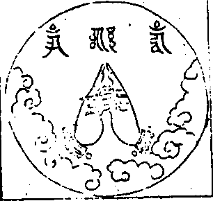
(○次遣境界諸魔。止觀二羽外相叉。進力二度直豎。誦真言)。
唵。斡資囉(二合)牙恰。吽
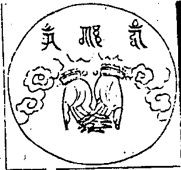
(○次遣空界諸穢。令空清淨妙香芬馥。止觀二羽內相叉。十度仰上誦真言)。
唵。斡資囉(二合)左辣啞捺辣。曷捺。荅曷巴拶。麼塔。班拶囉納。吽(短呼)癹吒(半音)
○正立曼荼(○頌內心曼荼○立曼荼自體○讚曼荼法門)
(○頌內心曼荼。二頌成身。三頌淨地)。
方便自性不壞體 金剛不壞大勇識
最勝無比超出相 今此所作皆成就
勝慧自性甚深性 演說最上法輪音
以無生現方便身 今此所作願得成
一切方隅所有地 瓦礫砂磧等皆無
琉璃寶地平如掌 柔軟微妙願安住
猶如極樂國莊嚴 妙寶為地眾華敷
園林池沼無缺少 以大法音願具足
從出世間復能現 種種七寶之所成
無量光明遍照處 諸佛菩薩願安住
(誦鈴真言。以開曼荼囉門)。
唵。斡資囉(二合)看支夷(二合)囉納囉納。不囉(二合)囉納不囉(二合)囉納。三不囉(二合)囉納三不囉(二合)囉納。薩哩斡(二合)孛塔赤的囉(二合)不囉(二合)拶哩荅。麻曷不囉(二合)尼牙(二合)巴囉蔑荅。那達速巴微。薩哩斡(二合)塔哩麻(二合)紇哩(二合)達耶。傘多沙納葛哩。吽吽癹吒。莎訶
○立曼荼自體(○香水塗壇○立壇基位○寶壇出生)
(○香水塗壇以戒度取白檀香水。三灑曼荼以加持之。即誦真言)。
唵。斡資囉(二合)麻明。啞吽
○立壇基位(○立金剛基○界聖住位)
(○立金剛基。行者自以勝智觀心內外皆無所有三世等同虛空。今將出生金剛界大曼荼羅五佛寶閣。先應立佛寶閣金剛地基。即以戒度取白檀香水。于曼荼上作一圓相。想kha 佉字空點漸引成大空輪界。隨誦真言)。
唵。斡資囉(二合)烏怛葛啞吽
(○次觀ha 唅字為黑色境。漸引持地風輪界。復想虛空為輪圍山。即以花米向曼荼外圍右旋散灑。誦成就真言)。
唵。斡資囉(二合)哩契啞吽
(○次於虛空。想va 鍐字白色光明為毘盧遮那佛。由具慈悲。遍身流注八功德水。便成香乳大海以二羽內縳。仰而右旋。誦成就海真言)。
唵(引)。尾麼路(引)捺地吽
(○次於海中想pra 缽囉(二合)字形如龜背其色如金。所謂金輪。廣大無量由旬。忽然之間從金輪龜背涌出八葉蓮華。金剛為莖。於華臺中。想凡阿字門涌出須彌山王。其山四寶所成七重金山周匝圍繞。山間傍出四眺四天王各住本方。日月周照。四洲八渚無量眷屬圍護金剛寶峰樓閣以十度內交為拳。相合緊密。誦成就寶山真言)。
唵(引)。阿者攞吽
○界聖住位(五佛寶閣四方四門。中八金剛柱為嚴飭。安住聖位。此金剛基以五色米或粉界其方位。於五色中各著種智字。中以白色想va 鍐字。東以赤色想ya 岩字。南以黃色想la 藍字。西以綠色想ra 覽字。北以黑色想ha 唅字。當誦五方真言以色米作界方時。隨所想種子字而生五如來智。謂中鍐字想生法界清淨智。東岩字想生大圓鏡智。南藍字想生平等性智西覽字想生妙觀察智北唅字想生成所作智手拈色米口誦真言。各隨界道而用安置)。
唵。鍐彌羅微捺麻
唵。鍐斯克徹(二合)麻彌羅微捺麻
唵。岩晡兒斡(二合)微的葛耶捺麻
唵。岩的葛耶捺麻
唵。岩微的葛耶捺麻
唵。藍咱晡的癹耶捺麻
唵。藍拶麻囉耶捺麻
唵。藍斡囉拶麻囉耶捺麻
唵。覽啞咓囉孤荅尼耶捺麻
唵。覽沙茶耶捺麻
唵。覽烏荅囉曼的哩(二合)尼耶捺麻
唵。唅烏荅囉孤囉尼捺麻
唵。唅孤囉微捺麻
唵。唅葛囉斡耶捺麻
唵。岩葛拶囉的捺(二合)耶捺麻
唵。藍[口*普]嚕沙唽囉的捺(二合)耶捺麻
唵。覽。斡節囉的捺(二合)耶捺麻
唵。唅斯的哩(二合)囉的捺(二合)耶捺麻
唵。岩葛吒葛(二合)囉的捺(二合)耶捺麻
唵。藍吒吃囉(二合)囉的捺(二合)耶捺麻
唵。覽麻尼囉的捺(二合)耶捺麻
唵。唅麻曷聶塔捺耶捺麻
唵。啞斯哩(二合)牙耶捺麻
唵。藍昝的囉(二合)耶捺麻
唵。啞擦怛囉(二合)耶捺麻
唵。薩哩斡(二合)囉的尼(二合)毘藥(二合)捺麻
色米真言界定閣基方位之圖
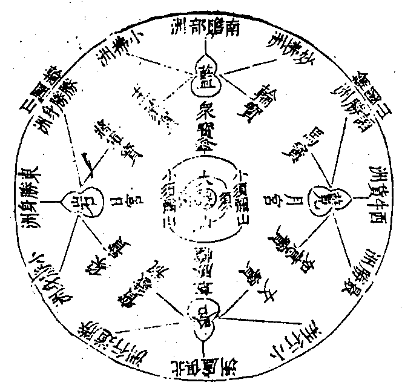
○寶壇出生(○曼荼正行○心壇現證)
正行中(○聖證現前○現住法樂)
(○聖證現前。於彌盧山頂。想va 鍐hūṃ 吽tra 怛囉（二合）hrīḥ 頡哩（二合）ā 噁五字。為佛寶閣其閣四面正等。具有四門。門門左右有吉祥幢。軒楯周環。門重階道。懸雜繒綵。珠網華鬘。閣外四角諸門皆金剛寶以為嚴飭。又外多有園林池沼。天衣瓔珞諸劫波樹。又有諸天美妙歌詠之樂音。諸阿修羅莫呼落伽王金剛舞之娛樂。此寶閣中以八金剛柱而為嚴飭。是金剛界大曼荼羅。五方如來十六大菩薩。并四波羅蜜。施設四種內供。四種外供。與守門菩薩。各以本三摩地。隨方安住。即結寶閣印。以二羽金剛拳。進力檀慧相鉤。誦成就寶閣真言)。
唵。斡資囉(二合)拶葛囉(二合)吽
金剛寶峰五佛樓閣之圖
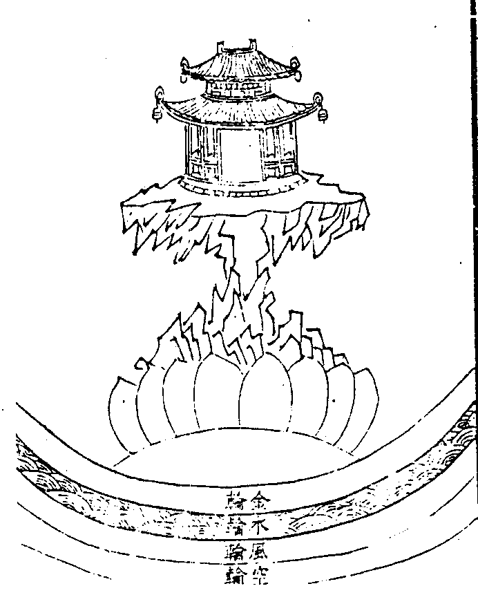
佛寶閣中曼荼聖者號位種智字之圖
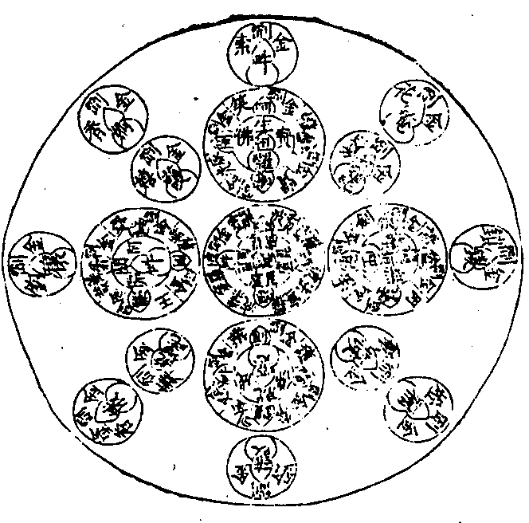
(金剛界大曼荼羅。為我毘盧性海莊嚴。是諸菩薩現證三昧。行者觀念與之相應。普緣佛會無邊剎海。諦觀五智一切如來。以金剛業禮拜旋繞以供養具恭敬奉獻。因果交徹。心色互融。與佛三摩。同一受用。表白鳴魚。朗誦經法。聲隨觀想。自在出生)。
爾時本尊毘盧如來。以一切如來互相涉入故。平等安住一切虛空身語心金剛。以一切如來金剛界覺悟智薩埵開發盡虛空界微塵量金剛加持所生智藏。以一切如來灌頂寶。舒遍虛空真如智為現證三菩提。以一切如來身自性清淨故。即一切法自性清淨。以一切如來不空事業勝所作故。一切平等無上巧智。而即是時出生賢聖。所謂一切如來大菩提堅固薩埵。一切如來鉤召三昧。一切如來隨染智自在。一切如來善哉。一切如來灌頂寶。一切如來日輪圓光。一切如來思惟王摩尼幢。一切如來大笑。一切如來大清淨法。一切如來般若智。一切如來大輪。一切如來祕密語。一切如來不空種種事業。一切如來大精進堅固鎧。一切如來守護金剛藥叉。一切如來身語心金剛印智。
(彈指一下。想見一切如來菩薩聖眾。一時雲集須彌山頂金剛寶閣。於師子座隨諸方面。如理而住。隨誦真言)。
唵(引)(一)。野他薩哩嚩(二合)怛他誐多(二合)。薩怛(二合)他[亢*欠](三)
○現住法樂(○內壇獻供○寶錯外壇)
內壇(○獻座○陳供)
唵。薩哩斡(二合)荅塔葛達。囉的捺(二合)麻曷曼荅囉(二合)。布拶。彌渴。薩謨的囉(二合)。斯癹囉納三摩耶。啞吽
○陳供(香水濯足。勝塵悅意。各隨水色。作奉物。勢先奉閼伽。次呈八供後守四門)。
(○奉閼伽者。以淨缾水注啞哩干。心想壇中沐浴聖眾)。
唵。薩哩斡(二合)荅塔葛達薩叭哩(二合)咓囉。啞哩干(二合)巴丹。巴囉(二合)諦拶耶。莎訶
(○八供者。嬉鬘歌舞為內四供。香華燈塗為外四供其結契內四供。以止觀掌豎禪智度小低頭為獻戲嬉契。以二羽前伸臂為獻華鬘契。以二羽屈拄從臍至口散。為獻歌音契。以二羽旋舞置於頂。為獻舞儀契。外四供。以二羽覆掌下按之。為燒香契。以二羽仰掌上舉之。為散華契。以二羽作拳豎智定度。為然燈契以二羽開掌摩其胸向外抽散。為塗香契。結此八供契時。皆前必作金剛縳。即極諸度本。互相握合者是。後必作金剛合掌。即二羽初分相交。觀羽壓止羽者是。凡修供養。皆須此法。今內四供)。
唵。薩哩斡(二合)荅塔葛達。斡資囉(二合)邏細。布拶。彌葛薩謨的囉(二合)。斯癹囉納三麻耶。啞。吽
唵。薩哩斡(二合)荅塔葛達斡資囉(二合)麼隸。布拶。彌葛。薩謨的囉(二合)。斯癹囉納三麻耶。啞。吽
唵。薩哩斡(二合)荅塔葛達。斡資囉(二合)擬帝。布拶。彌葛。薩謨的囉(二合)。斯癹囉納三麻耶。啞。吽
唵。薩哩斡(二合)荅塔葛達。斡資囉(二合)你哩(二合)帝。布拶。彌葛。薩謨的囉(二合)。斯癹囉納三麻耶。啞。吽
(次外四供)。
唵。薩哩斡(二合)荅塔葛達。斡資囉(二合)度閉。布拶。彌葛。薩謨的囉(二合)。斯癹囉納三麻耶。啞。吽
唵。薩哩斡(二合)荅塔葛達。斡資囉(二合)補瑟閉(二合)。布拶。彌葛薩謨的囉(二合)。斯癹囉納三麻耶。啞。吽
唵。薩哩斡(二合)荅塔葛達。斡資囉(二合)虜計。布拶。彌葛。薩謨的囉(二合)。斯癹囉納三麻耶。啞。吽
唵。薩哩斡(二合)荅塔葛達。斡資囉(二合)喭提。布拶。彌葛。薩謨的囉(二合)。斯癹囉納三麻耶。啞。吽
(○守門菩薩。金剛鉤。金剛索。金剛鎖。金剛鈴也。今誦鈴真言。入聲解脫。照般若理而為守護也)。
唵。斡資囉(二合)看支夷(二合)囉納囉納。不囉(二合)囉納不囉(二合)囉納三不囉(二合)囉納三不囉(二合)囉納。薩哩斡(二合)孛塔赤的囉(二合)不囉(二合)拶哩荅。麻曷不囉(二合)尼牙(二合)巴囉蔑荅。那達速巴微。薩哩斡(二合)塔哩麻(二合)紇哩(二合)達耶。傘多沙納葛哩。吽吽和和啞龕莎訶
○寶錯外壇(左手持二金剛寶如十字著。右手仰舒下垂作施印。想心月輪中tra 得浪字放黃色光。一念變成寶生佛。左手持二金剛寶。右手結施印。即誦寶生心密言)。
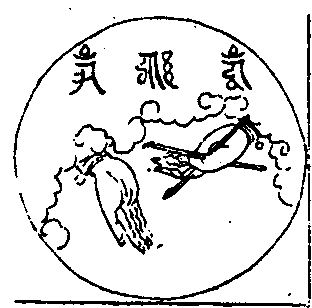
唵。薩不荅(二合)囉的捺(二合)。吽
(○次想二金剛寶。出生無盡諸天如意珍寶。即以二手十字相持向曼荼外圍右旋。出生珍寶。間錯莊嚴。隨誦寶錯真言)。
唵。斯嘛(二合)囉。斯嘛(二合)囉。密嘛(引)曩斯(引)葛囉麻訶拶葛囉(二合)(引)。吽(長聲)
○心壇現證(○觀法性空○心壇現空)
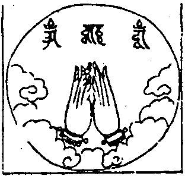
(○觀法性空。止觀二羽當胸。虛心合掌。如未敷蓮華。誦性空真言)。
唵。莎[口*癹]斡順牙(二合)達。薩哩斡(二合)荅哩麻(二合)。莎[口*癹]斡順牙(二合)達[牟*含]
○心壇現空(於空性中。想bhrūṃ [口*普][口*隆]（二合）字。成虛空金剛心曼荼羅。即誦佛寶閣真言。與三金剛真言)。
[口*普][口*隆](二合)唵啞吽
(表白清音。朗宣觀意)。
十方世界 所來集會 一切如來 并諸菩薩
混入本尊 毘盧心中 而彼一切 如來之心
復各出自 菩薩眾會 咸共於我 本尊毘盧
金剛寶峰 五佛閣內 周匝圍繞 住三摩地
一時所有 天妙微密 戲嬉寶冠 法歌儀舞
戒香慧華 智燈定塗 安禪食味 適意樂音
清徹無礙 猶如普賢 化現種種 雲集供養
遍滿虛空 充塞法界 盡輪迴際 無有間斷
○讚曼荼法門
諦此最上廣大曼荼羅 相如金剛名為金剛界
金剛摩尼寶峰五樓閣 於須彌山頂上巍然起
基陛正等四面吉祥幢 珠網華楯周環四階道
四洲八寶日月光照間 所住眷屬生來自圍繞
外院垂珠懸鐸映日月 諸天奏樂修羅獻妙舞
內宮八金剛柱為莊嚴 正敷方等師子華王座
毘盧本尊光明四面照 以真實身如理住其中
阿閦寶生無量壽不空 從毘盧身四方各出現
十六菩薩并四波羅蜜 本三摩地隨方而安置
施設內外八種密供養 攝智明王四門守護持
諸佛菩薩同時集會者 現成正覺大轉法輪音
為令普盡無餘諸有情 悉獲平等智通安樂果
金剛薩埵如來增上主 說此最勝金剛曼荅羅
大乘現證真實三昧門 悉得相應能作成就事
我今自以金剛身語意 出生一切如來大智輪
以諸如來之所加持身 淨月輪中一體願安住
○慶成法門(即緊振鈴誦因緣咒)
唵。英[口*捺]呤麻(二合)(引)形[丁*各](切身)。不囉(二合)末斡(引)形[丁*各](舌齒)。碇善(引)怛達(引)遏多。纈末[口*捺]怛(二合)碇善(引)拶。養禰[口*浪][口*捺]。[口*英]梡(合口)斡(引)溺(引)麻訶(引)實囉(二合)麻捺英。莎賀
○結願回向
唯願上師三寶中圍佛會。慈悲攝受今辰施主福慧莊嚴。世出世間吉祥如意。普及法界一切有情速成無上佛果菩提。
唵。啞。吽
自成曼荼門竟(少略靜住可進湯飲)。
○成他曼荼門(○皈依發心○修施法供○回向三寶)
○皈依發心
(此去引偈表白提舉)。
歸依與佛同慈力 發心與生同悲仰
菩提以是為修因 即得圓成無上果
眾等發廣大心。
歸依金剛上師 歸依佛 歸依法 歸依僧。
我今發心。不為自求人天福報聲聞緣覺乃至權乘諸位菩薩唯依最上乘發菩提心。願與法界眾生一時同得阿耨多羅三藐三菩提心。
○修施法供(○上奉三寶○下施六道)
上奉中(○入壇請聖○修明智行○啟告本事○奉申供養)
○重入輪壇
端結大輪明王契 有情同入曼荼羅
獲得灌頂三昧耶 一切所作皆成就
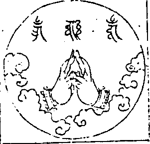
(以二羽內相叉。進力並伸直。忍願纏進力初節。前峰各相拄。禪智並伸直當心。默誦真言七遍)。
捺麻斯得哩(二合)野(一)。脫夷(二合)葛喃(二)。薩哩斡(二合)怛塔葛達喃(三)。唵(四)。微囉積(五)。微囉積(六)。麻訶拶葛囉(二合)。斡資哩(二合)斡資哩(二合)(八)。薩怛薩怛(九)。薩囉諦(十)。薩囉諦(十一)。得囉(二合)夷(十二)。得囉(二合)夷(十三)。微馱麻尼(十四)。三攀拶納彌(十五)。得囉(二合)麻禰的(十六)。席塔訖哩(二合)得蘭(二合)顏席提脫夷(二合)莎訶(十七)
(密契真言。殊勝方便。身心備得佛剎微塵數三摩耶無作禁戒。三業既已清淨。則成入一切曼荅羅。護證灌頂三摩耶。即時盡空法界六趣有情。速得同入大曼荅羅。等同聖者矣。唐沙門慧日云。當誦二十一遍。一切所作。無不成就)。
○請聖光臨(○奉請三寶○印現壇儀)
稽首五智三身佛 金剛祕密正法藏
勝願菩提大心眾 今當奉請願光臨
(主者起身。燒香散華。一一三請。齋主下拜)。
一心奉請。
盡十方。遍法界。微塵剎土中。常住佛寶。
盡十方。遍法界。微塵剎土中。常住法寶。
盡十方。遍法界。微塵剎土中。常住僧寶。唯願。
不違本誓。憐愍有情。光臨道場。證明功德。
(想十方三寶。隨感而降。不起真際。[土*則]塞虛空)。
一心奉請聖者金剛密跡。忿怒十大明王。天龍八部。婆羅門仙。諸護法神。一切聖眾唯願
不違本誓。憐愍有情。賜我威神。光嚴法會。
○印現壇儀
締此發心轉輪印 即為教令吉祥輪
現成廣大曼荅羅 一切諸佛咸遍入
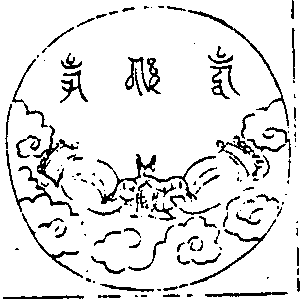
(止觀二羽各作金剛拳。進力檀慧互相釣。胸前微動。誦心真言)。
唵。斡資囉(二合)拶裓囉(二合)吽(一)。拶(二)。吽(三)。[嘟-者+(看-目)](四)。斛(五)
(以印置身前。即遍虛空界成現大曼荅羅。十方三寶頓爾明現)。
○修明智行(○修普賢行○入般若智)
諸佛行王五悔足 普賢願海十門周
今令參入道場中 行願修明唯攝受
(行者秉爐。恭對壇佛。誦云)。
如是等一切世界諸佛世尊常住在世。是諸世尊。當慈念我若我此生。若我前生。從無始生死已來所作眾罪。若自作。若教他作。見作隨喜。若塔若僧。若四方僧物若自取若教他取。見取隨喜。五無間罪。若自作。若教他作。見作隨喜。十不善道。若自作。若教他作。見作隨喜。所作罪障。或有覆藏。或不覆藏。應墮地獄餓鬼畜生諸餘惡趣。邊地下賤。及篾戾車如是等處。所作罪障今皆懺悔。今諸佛世尊。當證知我。當憶念我。我復於諸佛世尊前作如是言。若我此生若我餘生曾行布施。或守淨戒。乃至施與畜生一摶之食。或修淨行所有善根。成就眾生所有善根。修行菩提所有善根。及無上智所有善根。一切合集。校計籌量皆悉回向阿耨多羅三藐三菩提。如過去未來現在諸佛所作回向。我亦如是回向。
眾罪皆懺悔 諸福盡隨喜 及請佛功德
願成無上智 去來現在佛 於眾生最勝
無量功德海 我今歸命禮
所有十方世界中 三世一切人師子
我以清淨身語意 一切遍禮盡無餘
普賢行願威神力 普現一切如來前
一身復現剎塵身 一一遍禮剎塵佛
於一塵中塵數佛 各處菩薩眾會中
無盡法界塵亦然 深信諸佛皆充滿
各以一切音聲海 普出無盡妙言詞
盡於未來一切劫 讚佛甚深功德海
以諸最勝妙華鬘 伎樂塗香及傘蓋
如是最勝莊嚴具 我以供養諸如來
最勝衣服最勝香 末香燒香與燈燭
一一皆如妙高聚 我悉供養諸如來
我以廣大勝解心 深信一切三世佛
悉以普賢行願力 普遍供養諸如來
我昔所作諸惡業 皆由無始貪瞋癡
從身語意之所生 一切我今皆懺悔
十方一切諸眾生 二乘有學及無學
一切如來與菩薩 所有功德皆隨喜
十方所有世間燈 最初成就菩提者
我今一切皆勸請 轉於無上妙法輪
諸佛若欲示涅槃 我悉至誠而勸請
唯願久住剎塵劫 利樂一切諸眾生
所有禮讚供養福 請佛住世轉法輪
隨喜讖悔諸善根 回向眾生及佛道
願將以此勝功德 回向無上真法界
性相佛法及僧伽 二諦融通三昧印
如是無量功德海 我今皆悉盡回向
所有眾生身口意 見惑彈謗我法等
如是一切諸業障 悉皆消滅盡無餘
念念智周於法界 廣度眾生皆不退
乃至虛空世界盡 眾生及業煩惱盡
如是四法廣無邊 願今回向亦如是
○入般若智
如來權智不思議 照諸法相盡皆空
以無所得得菩提 是深理趣今當入
(默轉心經)。
般若波羅蜜多心經。
○啟告本事
化道因緣原普度 悲心偏向苦眾生
密教重開施食門 我今啟告行斯事
(秉爐三白)。
啟告十方一切諸佛。般若菩薩金剛天等及諸業道無量聖賢。我今(某甲)。以大慈悲乘佛神力。召請十方盡虛空界。三塗地獄諸惡趣中。曠劫饑虛一切餓鬼閻羅諸司天曹地府業道冥官婆羅門仙久遠先亡。壙野冥靈虛空諸天。及諸眷屬異類鬼神。唯願諸佛般若菩薩金剛天等無量聖賢及諸業道願賜威光悲增護念。普願十方盡虛空界。天曹地府業道冥官無量餓鬼。多生父母先亡久遠婆羅門仙。一切冤結負於財命種種類族異類鬼神各及眷屬。乘如來力於此時中決定降臨。得受如來上妙法味清淨甘露。飲食充足滋潤身田。福德智慧發菩提心。永離邪行歸敬三寶行大慈心利益有情求無上道。不受輪迴諸惡苦果。常生善家離諸怖畏。身常清淨證無上道。
○奉申供養(○申供○讚禮)
○申供(○運心供養○三寶施食)
人天所有受用物 香華食樂及閼伽
樓閣幢幡衣服等 我今運心而供養
(心運世間無主所攝水陸諸華。及與人天妙啞哩干。妙塗香雲。燒香燈明。幢幡繖蓋鼓樂歌舞真珠羅網。懸諸寶鈴。花鬘白拂。劫樹衣服。天廚妙食。樓閣莊嚴頭冠瓔珞。如是等雲。普遍供養即作雷音。一稱吽字)。
hūṃ (引)
(吽字周遍光明晃耀。光中化出一切如來受教天女六人。紅黃赤白雜綠。人各一色。花香燈塗食樂。人各一物面如秋月。四臂纖好。上二相又下二呈供。足輪宛轉。展左跪右。遍至法界海會眾前。海會眾前遍有供養如是修供養已。還歸心月輪中。主者澄神運想。表白隨觀宣偈)。
吽字放光照法界 同時湧出六天母
面眉明淨如秋月 四臂纖長眾寶嚴
華香燈塗與食樂 二手兩叉二捧獻
足輪轉左而跪右 遍至海雲眾聖前
十方雲海眾聖前 皆有天身修供養
旋轉無礙互莊嚴 盡未來際作佛事
如是光天供養已 依然復歸心月輪
持明結契重呈奉 成就普賢廣大願
(當重持明結契句。即以二羽外相交初分。以右押左。置於頂上。誦成就運心供養真言。七遍)。
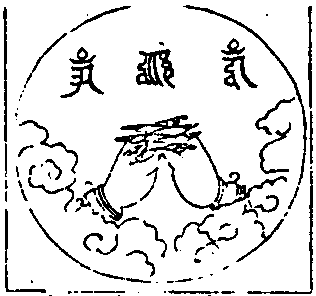
那麻薩哩斡(二合)荅塔葛的毘牙(二合)。月說穆契毘牙(二合)。唵(引)薩哩斡(二合)(引)塔龕烏忒葛(二合)的。斯癹(二合)囉納兮慢葛葛捺龕。莎訶
○三寶施食(○遣魔變空○奉施飲食)
三寶為施甘露食 普霑地上諸賢聖
先此遣除作障者 并諸食器變成空
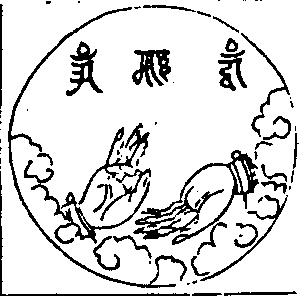
(○遣魔印咒 以禪押施度頭。戒忍進疏伸)。
唵(引)。斡資囉(二合)拽屹徹(二合)吽
(想三指尖出大火光。搖動似扇。以遣諸魔)。
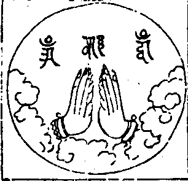
(○變空印咒 二羽虛合如蓮華狀。豎立胸前)。
唵(一)。莎癹斡[禾*木]塔(二)。薩哩斡(二合)塔哩麻(二合)(三)。莎癹斡[禾*木]塔。[亢*欠](四)
(想現前諸食。及諸食器悉變成空。唯是一真空境)。
○奉施飲食
三密攝成智甘露 滿盛寶器遍虛空
契印真言奉獻之 地上聖賢歡納受
(上食器變空。今於其空處想大寶器滿盛甘露。誦三字總持七遍。攝受盡成智甘露味)。
唵(引)啞(引)吽(引)
(奉食契者。仰二手掌向前側相著。戒方二度側相著。微屈進力二度。傅著忍願二度側。禪智二度。傅著進力側。似掬水勢。誦奉食咒)。
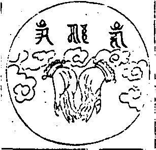
唵(引)啞葛嚕穆看薩哩斡(二合)塔哩麻(二合)喃(一)(引)。啞牒耶(二合)(引)奴忒班(二合)納奴忒(二)(引)。唵(三)。啞(四)。吽(五)。癹吒莎訶(六)
(以此寶器智甘露味。獻於地上一切聖賢。各隨本願。歡喜納受。此諸聖眾。既以自他利益滿願為懷。若今齋主所有求索願事。必蒙允許)。
(宣奉食偈)。
我今奉獻甘露食 量等須彌無過上
色香美味遍虛空 上師三寶哀納受
次供顯密護神等 後及法界諸有情
受用飽滿生歡悅 屏除魔害施安寧
今辰施主眷屬等 消災集福壽延長
所求如意悉成就 一切時中願吉祥
(當為齋主宣達疏意化煉奉獻三寶聖賢綵緞紙錠)。
○讚禮
世尊大慈妙莊嚴 明解圓滿一切智
能施福慧如大海 於諸如來我讚禮
自性本體離諸欲 能行此行脫惡趣
以為甚深玄妙理 於諸妙法我讚禮
解脫道中勝解脫 持淨戒行堪恭敬
勝妙福田生勝處 於彼大眾我讚禮
(上奉三寶章竟)。
○下施六道(○三昧行化○化圓獲益)
行化中(○三昧等觀○攝行三昧○密言送往)
是惟等觀三摩地 字輪現起大悲王
不移此定愍眾生 施甘露味脫苦惱
(主者入定。表白倚定。清音宣偈。如至結印加持句。即以手結印。默誦密言。以印加持)。
令入觀音三摩地 澄心閉目觀心中
圓滿皎潔淨月上 字種放光成蓮華
華中有一觀自在 相好圓滿無比對
左手執持妙蓮華 右手於葉作開勢
菩薩思惟有情身 各具覺悟之蓮華
清淨法界無惑染 八葉各有一如來
如來入定加趺坐 各各面向觀自在
頂佩圓光身金色 光明朗照極晃耀
次想其華漸舒大 其量周遍虛空界
思彼覺華照法界 如來海會供廣大
心若不移於此定 憐愍一切諸眾生
覺華蒙照脫苦惱 便同菩薩觀自在
蓮華漸收同己量 復結自在觀音印
加持四處誦密言 自身亦等觀自在
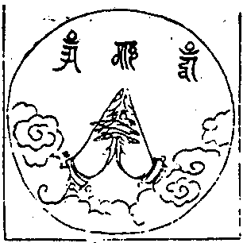
(以二手外相叉。二頭指相拄如蓮華葉。二大指並豎。密言曰)。
唵(引)斡資囉(二合)塔囉麻(二合)。紇哩(二合)
○攝行三昧(○破獄請召○鉤壇授法)
○破獄
先自惑纏身口意 此隨果報入幽關
金剛三業並舒光 諸趣獄門豁然破
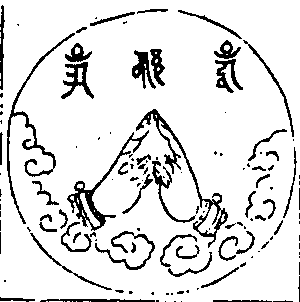
(二羽金剛拳。檀慧兩相鉤進力豎側合。誦破地獄咒)。
那麻阿瑟吒(二合)瑟吒(二合)攝諦喃。三藐三勃塔俱胝喃。唵(引)撮(引)辣(引)納縳婆細(引)。提哩提哩。吽
(想印中流出火光。口誦咒口出火光。心月輪上紅色hrīḥ 紇哩字放赤色火光。金剛三業三光同照。而阿毘等獄關鎖自開。所有罪人。悉皆得出若誦咒至末吽字。即以檀慧相鉤一掣開。表白隨和聲。接由此印咒下文。如是三誦。三掣。三接)。
○請召(○請幽冥教主○召法界六道)
願力應為冥教主 獄空而後證菩提
導將諸趣赴齋筵 合在斯時申奉請
(燒香散華。殷重三請。齋主下拜)。
一心奉請。眾生度盡方證菩提。地獄未空誓不成佛。大聖地藏王菩薩。唯願
不違本誓憐愍有情。導引幽途來臨法會。
(申四轉輪印。誦拶吽[嘟-者+(看-目)]斛。鉤入輪壇。依位安住)。
○召法界六道
(燒香散華。懃懇三召)。
一心召請。法界天仙道眾。修羅道眾。人倫道眾。畜生道眾。餓鬼道眾。地獄道眾。如是十類孤魂面然所統薜荔多眾。塵沙種類依草附木。魑魅魍魎滯魄孤魂唯願不迷本性仗佛慈光。來臨道場受茲法食。
(想諸鬼神久在幽闇。今蒙三密放光召請。身心踴躍。隨乘光明。不速而至。集於淨道)。
一心召請(此中應召隨筵受薦先亡。或施主家親眷屬等眾)。
○鉤壇授法(○拔除苦障（七印咒）○加稱聖號（七印咒）○施與法食（七印咒）)
○鉤召印咒
曠劫枵虛燄出口 孤棲無救亦無依
今乘三密大齋筵 隨光升入曼荅上
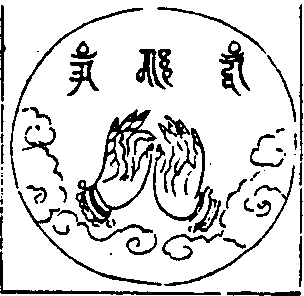
(左羽作無畏相。右羽向前豎。四度微曲。進度鉤召誦鉤召真言)。
唵。即納即葛。移希曳(二合)歇莎訶
(想心月輪上。紅色hrīḥ [口*紇]哩放光。口誦真言出光。印上進度出光三光齊放。至彼鉤攝。其諸鬼眾。從淨道上。隨光升入曼荅羅中。先向佛前旋繞三匝投身布禮。次至壇主位前。亦旋繞布禮。竟。表白越位對壇主問訊。啟云)。
(啟已。還位壇主鳴尺。讚善安慰)。
善來諸佛子曾結勝緣故。今遇此嘉會勿得生憂怖。一心渴仰法不出於此時。戒品一霑身速令離苦趣。
(諸鬼既得入壇。聞慰。躍然生喜。尋復作禮。退居一面。諸神入壇。自應天修人畜鬼獄。以勝劣為次。故此分列就位。亦順其次則天修人左面。獄鬼畜右面。是通行參隨之儀也正本云。從壇東門至南門地獄居之。從南門至西南隅餓鬼居之。自西南隅至西門畜生居之。自西門至西北隅人居之。從西北隅至北門修羅居之。自北門至東門天居之。此蓋西域尚東其式乃爾。若此方尚南。未必拘是也又云若無壇室。自上至下。得以勝劣居之。又云。亦得重坐故知壇位。自是隨其處之方向大小寬狹。一憑主者處置而已。無定法也)。
○召罪印咒
無始習熏諸罪障 色如黑霧鬼之形
真言密印智光鉤 所有盡入金剛掌
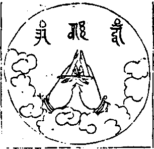
(二羽金剛縳。忍願伸如針進力曲如鉤。召罪真言曰)。
唵(引)薩哩斡(二合)巴缽(一)。羯哩沙(二合)拏(二)。月戍馱納(三)。斡資囉(二合)薩埵(四)。薩麻耶(五)。吽(六)。拶(七)
(心月輪上。白色hrīḥ 紇哩放大火光。口誦心密言出光。進力二度端各有jaḥ 拶字出光。相與鉤攝諸鬼身心所結惑業苦障來入掌中。眾罪入掌。黑如雲霧焦枯植髮。眾多鬼形)。
○摧罪印咒
罪鉤入掌今摧碎 執金剛智力為能
怒形忿句如摧山 結業繫縛盡解脫
(心月輪上青色hrīḥ [口*紇]哩放光。照前所召黑如雲霧眾多如鬼罪業之相。今摧碎之八度內相又忍願如前豎。摧罪印也。今須更出印中摧法。當誦心密言時。即以二羽諸度。各各相鉤頭入掌內。以進力二度鉤夾彼罪。令入掌中。餘度面各相捻。即伸忍願如針於願端現trā 怛囉(二合)字。忍端現ṭ 吒字。二字出火光。至誦怛囉吒。以忍願二指隨聲夾取彼罪。用力撚之。如彈指法。左上右下。咒篇三誦。摧法三作)。
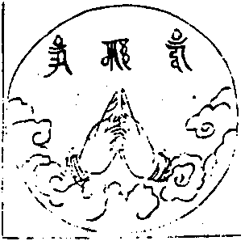
唵斡資囉(二合)巴尼月斯普(二合)吒耶(一)。薩哩斡(二合)阿巴耶班塔拏尼(二)。不囉(二合)穆恰耶(三)。薩哩斡(二合)阿巴耶葛諦毘藥(二合)(四)。薩哩斡(二合)薩埵喃(五)。薩哩斡(二合)荅塔葛達(六)。斡資囉(二合)三麻耶(七)。吽(八)。呾囉(二合)吒(九)
○破定業印咒
定業諸佛不通懺 我今心作智觀音
以金剛業相照明 五逆重罪頓消滅
(心月輪上現出青色hrīḥ [口*紇]哩出光密言手印。同時出光照前鬼等五逆重極諸佛不通懺悔之業。都無自性。消滅無餘。二羽金剛掌。進力屈二節。禪智押二度。破定業真言)。
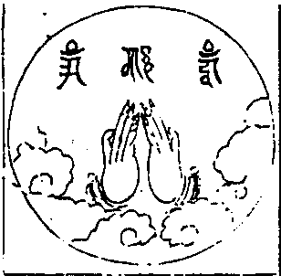
唵。斡資囉(二合)葛哩麻(二合)(一)。月朿塔耶(二)。薩哩斡(二合)阿咓囉拏你(三)。菩塔薩底曳(二合)納(四)。三麻耶吽(五)
○懺悔滅罪印咒
三金剛智發威光 法界有情等遍照
無始時來諸煩惑 本根枝末滅無餘
(心月輪上現白色hrīḥ 紇哩出光。遍照法界一切有情。所有無始貪欲瞋恚愚癡根枝煩惑。皆悉斷除。淨盡無餘)。
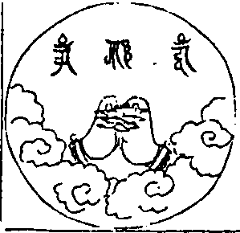
(二羽金剛縳。進力屈二節。禪智押進力。懺悔滅罪咒)。
唵薩哩斡(二合)巴缽(一)。月斯普(二合)吒(二)。怛賀納(三)。斡資囉(二合)耶(四)。莎訶(五)
諸佛子等。既懺悔已。百劫積集罪。一念頓蕩除。如火焚枯草。滅盡無有餘。
○施甘露印咒
妙色如來光照間 攝諸鬼神現前住
手中出施智甘露 饑火息滅得清涼
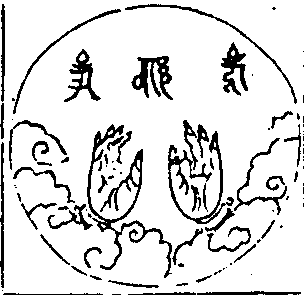
(右羽豎側立。忍度微曲。以左羽轉腕向前力智作聲。誦真言)。
那麻蘇嚕巴耶(一)。荅塔葛達耶(二)。怛牒塔(三)。唵(四)。酥嚕酥嚕(五)。缽囉(二合)酥嚕(六)。缽囉(二合)酥嚕(七)。莎訶(八)
(心月輪上白色hrīḥ 紇哩放光。照前諸鬼神等。於忍度上現一vaṃ 鍐字。流出智甘露水。力智點取彈灑空中。如微雨下。一切鬼神普得清涼。業火消滅身田潤澤。離饑渴想)。
○開咽喉印咒
諸神前住妙身光 左手持蓮覺華想
右手開彼覺華時 咽喉通達能言語
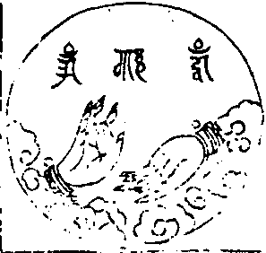
(左羽如持蓮。右羽忍禪作開勢。誦開咽喉真言)。
唵那謨癹葛瓦諦(一)。月補辣葛得囉▆耶(二)。荅塔葛達耶(三)。
(心月輪上白色hrīḥ 紇哩放光。照前諸鬼神等。手結慈清涼印。口誦心密言。以下解開左手蓮華時。想鬼神等咽喉自開通達無礙便得出聲稱佛名號)。
○加稱聖號(七如來號。皆與表白大眾同稱)。
已仗密言三障轉 菩提道法未全生
由聞七佛吉祥名 諸苦永離證常樂
諸佛子等。我今為汝稱讚如來吉祥名號。能令汝等永離三途八難之苦常為如來真淨佛子。
南無寶勝如來。
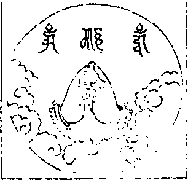
(二羽金剛掌。六度內相叉。進力頭▆▆禪智▆▆▆)。
那謨囉怛納(二合)。怛囉耶荅塔葛達耶。
南無離怖畏如來。
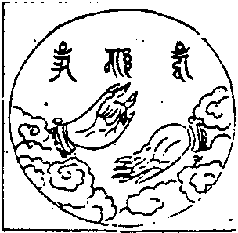
(右羽胸前豎。忍禪指相捻掌覆指垂下。左掌向上舒)。
那謨微葛達得囉(二合)納耶。荅塔葛達耶。
南無廣博身如來。
(左羽曲如拳。力智對肩彈右羽金剛拳。進禪對胸彈)。
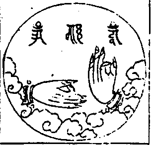
那謨癹葛咓諦(一)。月補辣葛得囉(二合)耶。荅塔葛達耶(二)
諸佛子等。若聞廣博身如來名號。能令汝等咽喉通達業火清涼。所受飲食得甘露味。
南無妙色身如來。
(左羽豎胸前。力智指相捻。右羽曲舒展。手掌皆仰下)。
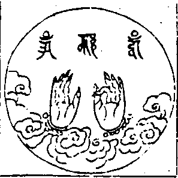
那謨蘇嚕八耶。荅塔葛達耶
諸佛子等。若聞妙色身如來名號。能令汝等諸根具足。相好圓滿。天上人間最為第一。
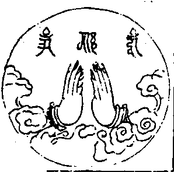
南無多寶如來。
(雙羽虛合掌。胸前蓮華狀)。
那謨波虎囉怛納(二合)耶。荅塔葛達耶
南無阿彌陀如來。
(右羽壓左禪智相拄)。
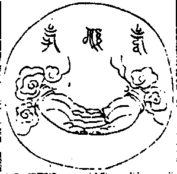
那謨阿彌怛婆耶。荅塔葛達耶
諸佛子等。若聞阿彌陀如來名號能令汝等往生西方。極樂淨土。蓮華化生。入不退地。
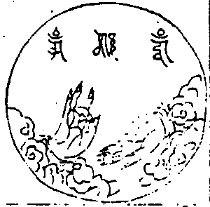
南無世間廣大威德自在光明如來。
(右羽曲仰拳。忍禪度相彈。左掌仰上。五指舒誦密言)。
那謨盧迦委斯諦(二合)呤捺弟唧說囉不囉(二合)癹耶。荅塔葛達耶
諸佛子等。若聞世間廣大威德自在光明如來名號能令汝等獲得五種功德。一者於諸世間。最為第一。二者得菩薩身端嚴殊勝。三者威德廣大。超過一切外道天魔。如日照世顯於大海。功德巍巍。四者得大自在所向如意。似鳥飛空而無阻礙。五者得大堅固智慧光明身心明徹。如琉璃珠。
(下總勸文。應須三白)。
諸佛子等。此七如來。以誓願力。拔濟眾生。永離煩惱脫三途苦。安隱常樂。一稱其名。千生離苦。證無上道。
○施與法食(七印咒)
○授三皈依
六道群靈咸在列 肅清三業瑩無塵
今當進入大乘門 三寶歸投為正處
汝等歸依三寶。
(二羽虛心合掌。為其三授。三結)。
歸依佛兩足尊 歸依法離欲尊 歸依僧眾中尊。
汝等佛子歸依佛竟 歸依法竟 歸依僧竟。
(想諸鬼神。向前作禮。歡心稟受)。
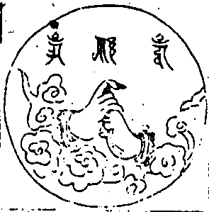
(左羽作拳豎力度右羽握力度。當胸前三歸依真言)。
唵婆(重呼引)龕
○發菩提心
淨菩提心勝願寶 道中正行此為先
自茲一往至成佛 誓力堅強永不退
今為汝等發菩提心。汝等諦聽。
今所發覺心遠離諸性相。蘊處及界等。能取所取執諸法悉無我。平等如虛空。自心本不生空性圓寂故如諸佛菩薩發大菩提心。我亦如是發。是故至心禮。
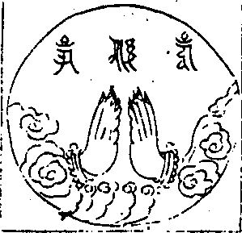
(二羽金剛掌。忍願如蓮華以印心上。發菩提心真言)。
唵補提節荅(一)。沒怛巴(二合)(二)達野弭(三)
(想諸鬼神於心月輪壇光中。歡喜稟發。其所發心。頓同月輪皎潔淨無瑕翳)。
諸佛子等。已為發菩提心竟。夫菩提心者從大悲起成佛正因。智慧根本。能破無明煩惱惡業。不被染壞。
○授三昧戒
妙善戒法今當受 奉行羯磨至心聽
金剛薩埵放光明 流入身心紹佛職
今為汝等授三昧耶戒。
汝等受佛戒。即入諸佛位。位同大覺已。真是諸佛子。
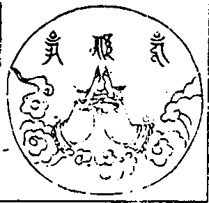
(二羽金剛縛。忍願伸如針。誦授戒真言)。
唵。三摩耶薩埵鍐
(想印中白色vaṃ 鍐字放大光明。普照現前諸鬼神眾。彼諸鬼神蒙光照及。十方世界妙善戒法。於虛空中變成光明。從諸頂門流入身心。一切善法皆悉具足。三聚淨戒俱時圓滿。身同普賢。坐大月輪。紹諸佛職。為佛嫡子)。
諸佛子等。已為授三昧耶戒竟從今已去。能令汝等人如來位是真佛子。從法化生得佛法分。
○施食印咒
威德自在陀羅尼 一食變為無量食
掌中一道白光流 彈灑盡成甘露味
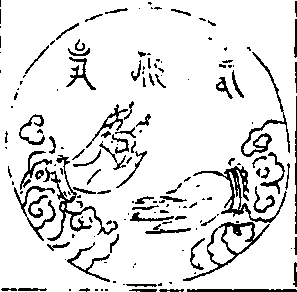
(左羽如持器。右羽彈忍禪。施食真言誦廿一遍)。
唵薩哩斡(二合)荅塔葛達(一)。阿咓盧揭諦鍐(二)。婆囉婆囉(三)。三婆囉三婆囉(四)。吽(五)
(左掌中白色vaṃ 鍐字出光流注種種無盡甘露法食。忍禪遍空彈灑光中鬼神。一一具有摩竭陀國七寶莊嚴之斛。妙勝飲食。充滿盈溢)。
諸佛子等。今為汝眾作印咒已。變此一食為無量食大如須彌量同法界終無能盡。
○乳海印咒
又此光明自在王 悲增護念施無盡
手中流出香色乳 遍界盈盈如大海
(復結前印。即左羽如持器右羽忍禪彈也。誦乳海真言七遍)。
那麻薩鬘荅勃塔喃鍐
(請觀音云。手出香色乳。饑渴者飽滿。故前印中白鍐所流甘露。至此增廣無量。成於乳海。洋溢法界味觸勝妙。香色盈空。諸鬼神等。受用不儩)。
諸佛子等。今為汝眾作印咒已。由此印咒威神力故即於印中流出甘露成於乳海流注法界普濟汝等一切有情充足飽滿。
○障施鬼印咒
嗟爾毘那夜迦眾 凡為法事即來魔
我佛慈悲平等門 故今施汝甘露食
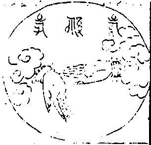
(展垂右手五指向外。想忍度vaṃ 鍐字白光。流出香乳智甘露味。遍至壇外諸障施鬼前表白取淨缾水。往壇界邊。向外徐徐注下。唱云淨水。手一彈指。師誦咒三遍表白三唱三彈諸障施鬼乘光受食。歡喜飽滿)。
唵啞吽。拶辣彌擔薩哩斡(二合)不哩(二合)的毘牙(二合)。莎訶
諸佛子等。雖復方以類聚物以群分。然我所施。一切無礙平等普遍不擇冤親。今日勿得以貴輕賤。以強凌弱。揀遏孤幼令不得食。施不均平越佛慈濟必須互相愛念猶如父母一子之想。汝諸眾等各有父母兄弟妻子眷屬善友知識或有事緣。來不得者。汝等慈悲愛念各各齎持飲食錢財物等。遞相布施。充足飽滿無有乏少。令發道意。永離惡趣。長越四流。當捨此身。速超道果。又為汝等將此淨食分為三分。一施水族。令獲人空。二施毛群。令獲法寂。三施他方稟識陶形。悉令充足獲無生忍。
○普供養印咒
一期法施事將圓 載獻聖凡普遍供
以大虛空藏出生 所求行願皆成就
(二羽合掌。忍願兩度相押外相叉。傅著手背。二頭指相蹙如寶形。誦普供養真言)。
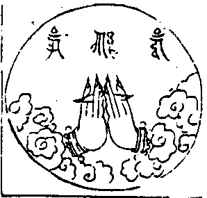
唵(一)。葛葛納三婆斡斡資囉(二合)斛(二)
(想忍願二度。端有白色oṃ 唵字。流出種種七寶樓閣宮殿。及諸幢幡寶蓋。香華飲食。無量七寶自己內外之財。布施一切諸佛聖賢。及六道一切有情。此是平等廣大真實供養。所生善願。皆得成就也)。
諸佛子等。從來所受飲食。皆是人間販鬻生命。酒脯錢財。血肉腥羶葷辛臭穢。雖復受得如是飲食譬如毒藥損壞於身。但增苦本沉淪苦海無解脫時。我今依如來教。精誠罄捨。設此無遮廣大法食。汝等今日遇茲勝事。戒品霑身。於過去世廣事諸佛。親近善友供養三寶。由此因緣。值善知識發菩提心。誓願成佛不求餘果。先得道者遞相度脫。又願汝等晝夜恒常擁護於我滿我所願。以此施食所生功德普將回施法界有情。共諸有情。同將此福盡皆回施無上菩提。一切智智。勿招餘果願速成佛。
○密言送往
汝等飽餐甘露味 菩提戒法益心神
更持佛頂陀羅尼 津送往生安樂剎
(止觀合掌。屈進力二指。以禪智指壓之當胸。先稱曰。唵娑度娑度。然後誦咒)。
佛頂尊勝陀羅尼神咒(此咒藏有二說。一者因善住天子七日命終。啟請帝釋禮佛諮度。佛放頂光為說是咒。唐時佛陀波利一譯。地婆訶羅兩譏杜行顗一譯。義淨一譯。雖五譯重沓。秪是一經。不空三藏尊勝念誦儀。題名稱譯。即五譯經之咒耳。二者因釋迦世尊。在極樂佛剎大善法堂時。無量壽佛為觀世音菩薩說。宋時法天三藏兩譯之。一名最勝佛頂陀羅尼經。但咒無文。一名佛說一切如來烏瑟膩沙最勝總持經烏瑟泥(二合)攝翻為頂兩處咒句。望唐五譯較多一倍。不動上師以此修潤語音長短。冠心真言於首。入此施食法中。以助往生。經文咒句。及說請因緣。前後往觀。條然不類。當知此咒。正為觀音攝化生方之密因也。何後之人。乃以此咒為明時仁孝皇后夢中感佛之說。斥為藏外。別於雲棲流行本中。增入唐義淨所譯之咒。一何惑哉。夫經文咒句。總是佛說。唐譯宋翻。皆能感通。但真言。行者。於修法中。其所因用。自有專屬。蓋此經觀音作請。無量壽說。而咒之[口*普][口*隆]乃是佛頂求生樂土正句。不同善住天子請說之咒。明矣。故瑜伽大教王經云觀想勃龍(二合)字。變成大智。大智化成大輪佛頂。若人樂求生佛剎土。決定隨願得生。此中已有三普[口*隆](二合)字。而首又冠以心真言者良以法食施竟。必須勸助往生。而往生密言。無若普[口*隆]佛頂。故不動師所以鄭重致其意也。然則人師如▆▆等。惑此為仁孝皇后夢感佛說。斥為藏外何說之從。曰。此第未之考耳。蓋勝國以迨明。初多有西僧入內供養。而西僧往往致靈此咒。仁孝皇后從西僧受得。持之專懇。夢寐不忘。忽然感得勝異之境從而抄前著後。抄咒著中。撰以為經。太子諸王各有序述。頒入南藏。若以西僧所授之咒對今不動師施食本中不過轉寫數箇字樣不同。聲音章句。無不同者。當時述施食濟生僉要者不依不動師正本字樣以書。乃依西僧所授者字樣書之。人師之惑。職此之由。孰知夫仁后夢感佛說咒句。與施食僉要本之咒句。同是西僧所授之本乎。又孰知西僧所授之本。其源出於不動師之正本乎。然斥為非藏。亦自有據。永樂十八年。北都校刻大藏。敕校藏法主一如曰。夢感佛說希有功德經。荒唐之言。不可入藏。是知仁后托於夢感。咒雖佛語。猶同偽撰。而人師不能通考。以是為非。未為無過也。若雲樓宏和尚。序行其書。於書初無損增。偽亦未校。而獨及是咒何歟。曰當依藏本。是雲棲之言也。斥宋增唐非雲棲之為也。今此。乃是不動上師正本)。
唵。普[口*隆](二合)莎(引)訶(引)。唵。捺謨癹葛斡諦。薩哩斡(二合)的唻(二合)盧結。不囉(二合)牒月攝瑟吒(二合)耶。勃塔耶諦捺麻。答爹塔。唵普[口*隆](二合)。普[口*隆](二合)。普[口*隆](二合)。菽塔耶菽塔耶。月菽塔耶月菽塔耶。啞薩麻。薩蠻達斡癹薩斯癹(二合)囉納葛牒葛葛捺。莎癹斡月說提啞撇羶贊多[牟*含]。薩哩斡(二合)怛塔葛達莎葛達。斡囉斡拶納美哩(二合)達撇釋該。摩訶抹的囉(二合)瞞的囉(二合)巴代阿訶囉阿訶囉。摩麻猶傘塔囉聶。菽塔耶菽塔耶。月菽塔耶。月菽塔耶。葛葛捺莎癹斡月說提。烏瑟坭(二合)攝月拶耶八哩說提。薩訶斯囉(二合)囉釋咩(二合)傘祖牒敵薩哩斡(二合)怛塔葛達(引)。斡哩結聶。沙翅巴(二合)囉咩達。八咧補囉聶。薩哩斡(二合)怛塔葛達麻諦。荅舍普咩不囉(二合)牒瑟吒(二合)敵。薩哩斡(二合)怛塔葛達赫囉(二合)荅牙。鉄瑟吒(二合)納鉄瑟吒(二合)敵。摩的哩(二合)摩的哩(二合)。摩訶摩的哩(二合)。斡資哩(二合)斡資哩(二合)。摩訶斡資哩(二合)。斡資囉(二合)葛耶。三訶怛捺八咧說提。薩哩斡(二合)葛哩麻(二合)斡囉捺月說提。不囉牒尼斡哩怛(二合)耶摩麻猶哩(二合)月說提。薩哩斡(二合)怛塔葛達薩摩牙。鉄瑟吒(二合)納。鉄瑟吒(二合)敵。唵摩[王*尼]摩[王*尼]摩訶摩[王*尼]。月摩[王*尼]月摩[王*尼]摩訶月摩[王*尼]。麻牒麻牒摩訶麻牒。摩摩牒莎麻牒怛塔達普怛。孤吒八咧說提。月斯蒲(二合)吒勃鉄說鉄。兮兮。拶耶。拶耶。月拶耶月拶耶。斯麻(二合)囉斯麻(二合)囉斯癹(二合)囉斯癹(二合)囉斯癹(二合)囉耶斯癹(二合)囉耶。薩哩斡(二合)勃塔。鉄瑟吒(二合)納。鉄瑟吒(二合)敵。說提說提。勃提勃提。斡資哩(二合)斡資哩(二合)麻訶斡資哩(二合)。莎斡資哩(二合)斡資囉(二合)葛哩毘(二合)拶耶葛哩毘(二合)。月拶耶葛哩毘(二合)。斡資囉(二合)佐辣葛哩毘(二合)。斡卒嚕(二合)忒癹(二合)微。斡資囉(二合)參癹微。斡資哩(二合)斡即哩(二合)聶。斡資[嚂-皿+見](二合)癹斡多摩摩。攝哩[嚂-皿+見]薩哩斡(二合)薩埵喃。拶葛耶八咧說鉄。癹斡多薩埵彌薩哩斡(二合)達。薩哩斡(二合)葛爹八哩說提實哲(二合)。薩哩斡(二合)荅塔葛達實哲(二合)[牟*含]。薩麻刷薩顏多。勃鉄勃鉄薛鉄薛鉄。譜塔耶譜塔耶。月譜塔耶月譜塔耶。謨拶耶謨拶耶。月謨拶耶月謨拶耶。菽塔耶菽塔耶。月菽塔耶月菽塔耶。薩蠻達謨拶耶謨拶耶。薩蠻怛囉釋迷(二合)八咧說提。薩哩斡(二合)怛達葛達赫囉(二合)荅牙。鉄瑟吒(二合)納鉄瑟吒(二合)敵。摩特哩(二合)摩特哩(二合)。摩訶摩特哩(二合)摩訶摩特囉(二合)。瞞的囉(二合)芭諦。莎(引)訶(引)
(誦咒時表白取壇上花米。向六道前旋轉俵散。想諸鬼神觸此花光。皆得往生極樂淨土)。
○化圓獲益(振鈴誦法樂偈)
承斯善利。地獄受苦有情者。刀山劍樹變化皆成如意樹。火團鐵丸變成蓮華而為寶。吉祥。地獄解脫而能成正覺。
承斯善利。餓鬼受苦有情者。口中煙燄燒身速願得清涼。觀音手內甘露自然長飽滿。吉祥。餓鬼解脫而能成正覺。
承斯善利。畜生受苦有情者。殺害燒煮楚毒等苦皆遠離。遠離乘騎愚癡速得大智慧。吉祥。畜生解脫而能成正覺。
承斯善利。人間受苦有情者。生時猶如摩耶右脅而降誕。願具六根永離八難修福慧。吉祥。人間解脫而能成正覺。
承斯善利。修羅受苦有情者。我慢顛狂拙朴速疾令柔善。惡心嫉姤瞋恚鬥戰自調伏。吉祥。修羅。解脫而能成正覺。
承斯善利。天中受樂有情者。欲樂策懃速發廣大菩提心。天中壽盡憂苦自然生歡悅。吉祥。天中。解脫而能成正覺。
承斯善利。十方獨覺聲聞者。棄捨小乘四諦十二因緣行。進趣大乘四攝六度修萬行。吉祥。二乘。解脫而能成正覺。
承斯善利。初地菩薩勇識者。百福莊嚴。一切行願皆圓滿。頓超十地證入一生補處位。吉祥。大乘速證究竟成正覺。
回向三寶。
現世之中未證菩提間 願無內外障難惡緣等
恒常遇逢最妙善知識 所修善事行願速成就
最上三寶。
臨命終時識性無迷惑 願生西方淨土如來前
依於慧日法光聞思修 斷惑證真愍念於有情
最上三寶。
若乘善業即生佛會前 若無善根不生聖道中
隨業輪迴世世所生處 志願猶在熏習無間斷
最上三寶。
願生中國勤修於正法 無病長壽受用悉具足
相好殊勝辯才智慧等 具七聖財獲得丈夫身
最上三寶。
幼年出家親承賢聖師 三種修學堅牢守護持
一切時中正念與正法 如日與光剎那不捨離
最上三寶。
功德本願最上三寶處 從今為始歸依而供養
貪欲瞋恚愚癡三種毒 寂靜猶如大地原無起
最上三寶。
觀見根塵識等有為法 如夢如幻不實而悟解
一切眾生了知亦若此 恒不忘失方便菩提心
最上三寶。
願以大乘祕密微妙法 如救頭然精進常修學
同佛證得無上菩提時 盡未來際度脫於六道
最上三寶。
南無西方無量壽如來。諸大菩薩海會聖眾。唯願法界存亡等罪消除。同生淨土。回向無上佛菩提。
○功圓解散(○奉安囑護○安住三摩○結願回向)
三寶慈悲彌法界 不違宿誓順緣與
奉以金剛解脫明 化道既周還本位
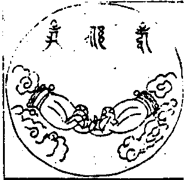
(二羽金剛拳。進力兩相鉤。隨誦而掣開。金剛解脫咒)。
唵斡資囉(二合)穆乞叉(二合)。穆
(想諸佛菩薩。各安本位。六道眾生悅樂超昇。能施所施。及與施物。皆悉隱而不現矣)。
○囑護天龍
天阿蘇羅藥叉等 來聽法者應至心
擁護佛法使常存 各各勤行世尊教
諸有聽徒來至此 或居地上或居空
每於人世起慈心 日夜自身依法住
願諸世界常安隱 無邊福智益群生
所有罪業並消除 遠離眾苦歸圓寂
每用戒香塗瑩體 常持定服以資身
菩提妙華遍莊嚴 隨所住處常安樂
○安住三摩(金剛薩埵百字咒。行者常能誦持。金剛薩埵恒作護持。而令安住三昧。若修行佛事。求願補闕。功德無量)。
唵(一)斡資羅(二合)薩埵蘇薩麻耶麻納巴辣耶(二)斡資囉(二合)薩埵諦奴缽諦瑟劄(二合)(三)涅哩(二合)鋤彌癹咓(四)蘇度束彌癹咓(五)阿奴囉屹都(二合)彌癹咓(六)蘇布束彌癹咓(七)薩哩咓(二合)些提彌不囉(二合)耶擦(八)薩哩斡(二合)葛哩麻(二合)蘇拶彌(九)稷達釋哩(二合)楊郭嚕(十)吽(十一)訶訶訶訶斛(十二)癹葛灣薩哩咓(二合)荅塔葛達斡資囉(二合)麻彌捫拶(十三)斡資哩(二合)癹咓(十四)麻訶薩麻耶薩埵阿(引)(十五)
○結願回向
諸佛正法菩薩僧 直至菩提我歸依
我以所修諸善根 為利有情願成佛
世出世間隨願所成 世出世間隨願所成
(結願竟法師下座。表白大眾伸回向)。
施食功德殊勝行 無邊勝福皆回向
普願沉溺諸眾生 速往無量光佛剎
瑜伽集要燄口施食儀(終)